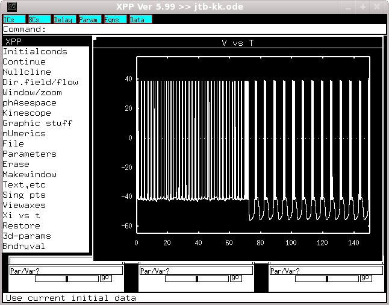

This is the readme for the model associated with the paper Komendantov AO, Kononenko NI (1996) Deterministic chaos in mathematical model of pacemaker activity in bursting neurons of snail, Helix pomatia. J Theor Biol 183:219-30 The XPP model was contributed by Dr Komendantov. XPP is available from http://www.math.pitt.edu/~bard/xpp/xpp.html Example usage under linux: Start with a command like xppaut jtb-kk.ode Select Initalconds -> Go with the mouse. After a short time you should get this graph  which replicates figure 9 A from the paper.